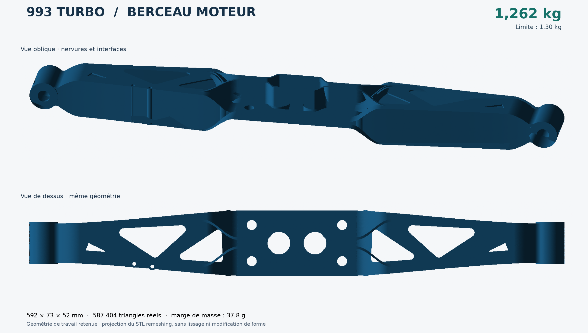
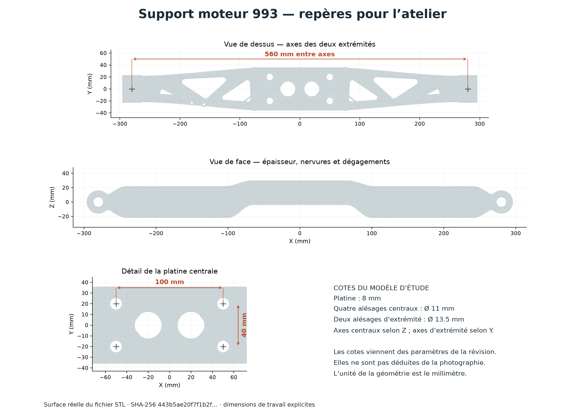
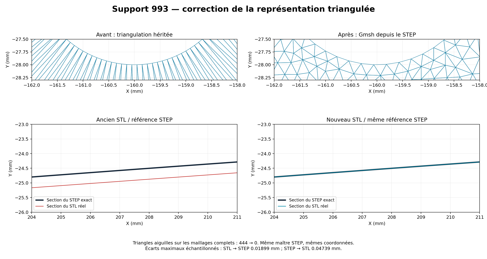
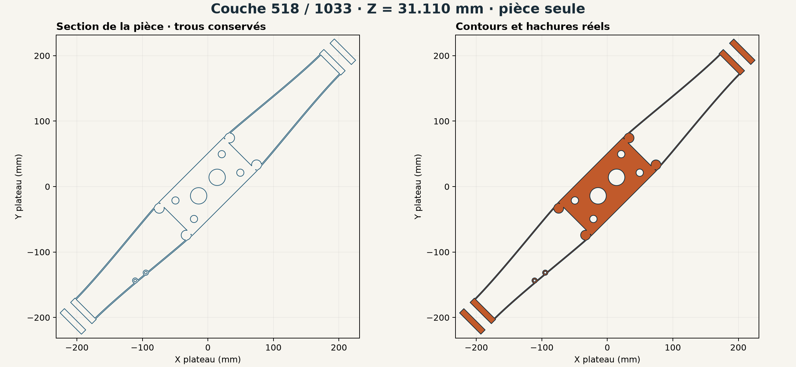
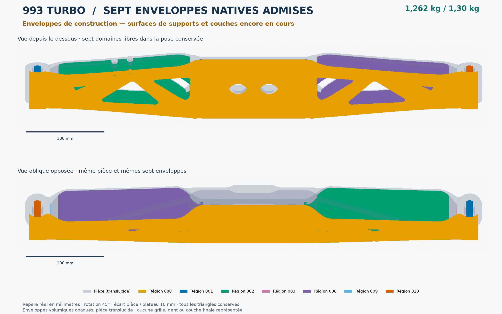
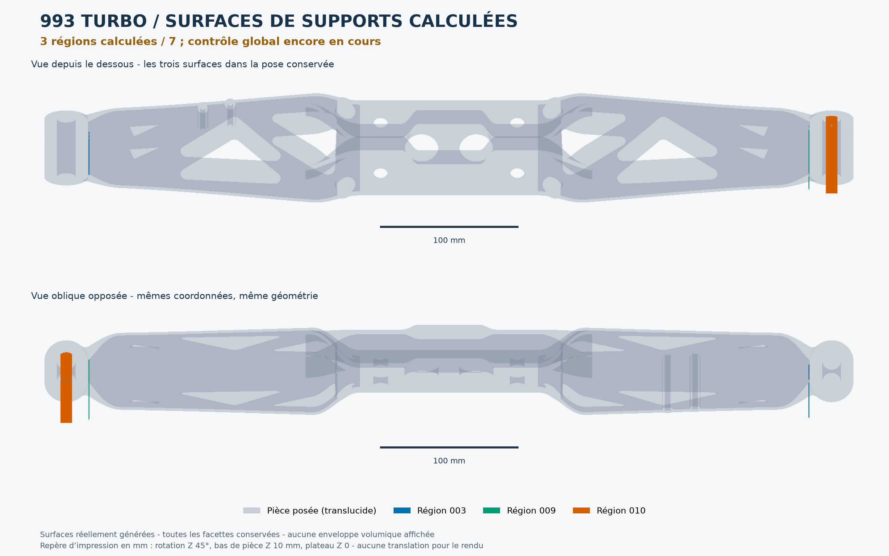
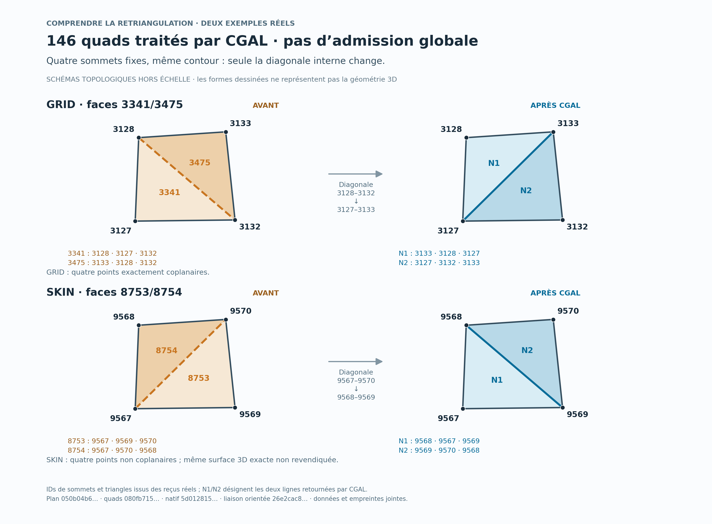
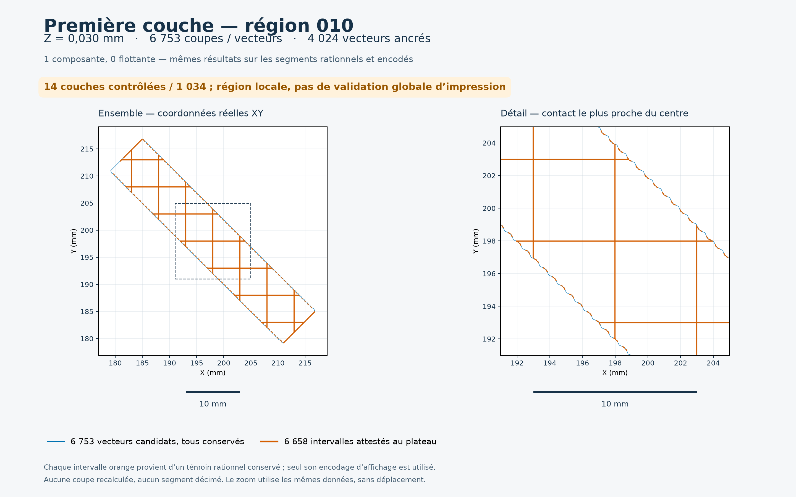
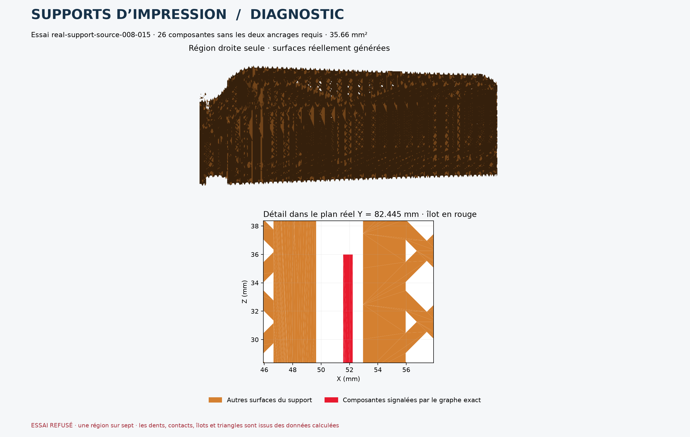

993 TURBO · DOSSIER VISUEL
Du modèle aux couches d’impression
Images produites à partir des fichiers CAD, des triangles et des résultats de calcul conservés dans le projet.
Pièce retenue : 1,262 kg. Géométrie et couches de la pièce calculées. Préparation des supports d’impression en cours de calcul et de contrôle.
La pièce retenue
1,262 kg sur une limite de 1,30 kg. Les vues utilisent tous les triangles du STL actuel.

Les dimensions du modèle
Plan coté de la géométrie de travail, avec les interfaces conservées.

La surface avant et après
Comparaison du maillage et de la référence STEP dans les mêmes coordonnées.

Une couche d’impression réelle
Couche d’indice 518 sur 1 034, à Z = 31,110 mm. Contours et hachures de la pièce ; cette planche ne contient aucun support.

Les sept enveloppes de construction
La pièce est montrée en gris translucide dans sa pose d’impression. Les couleurs identifient les sept enveloppes natives admises ; les surfaces de support et leurs couches restent en cours de calcul.

PDF de la vue globale · Sources et reproduction
Trois régions de supports d’impression calculées
La pièce est translucide ; les couleurs montrent les surfaces réelles des régions 003, 009 et 010 à leur position conservée. Trois checkpoints vérifiés sur les sept régions. Le contrôle strict des coupes de la région 010 a ensuite refusé la couche 68 ; sa correction est en cours. Ces images conservent les surfaces historiques.

PDF de la vue d’ensemble · Sources et reproduction
Correction de la triangulation avec CGAL
Deux exemples réels expliquent le changement de diagonale dans les supports d’impression. CGAL a traité 146 quadrilatères ; les schémas sont hors échelle et reprennent les identifiants réels. La copie corrigée conserve les sommets et les attributs ; le contrôle local fait passer les coupes dégénérées de 1 185 à zéro. Le nouveau graphe de connexion est vérifié et les 1 034 couches de cette région passent le découpeur strict, avec ses critères inchangés. L’audit de l’ensemble des supports reste à terminer.

PDF · Données, explication et reproduction · Trois formats reproduits à l’octet
Première couche des supports — contacts calculés
Région 010, Z = 0,030 mm : 6 753 vecteurs et 6 658 intervalles de contact au plateau, tous dessinés. Cette planche conserve le préfixe historique de 14 couches contrôlées. Le contrôle historique a refusé une coupe à la couche 68. Une nouvelle copie corrigée par CGAL passe désormais les 1 034 couches ; cette image conserve les vecteurs du préfixe historique.

PDF · Données incluses, reproduction et portée des contrôles
Les supports en cours de correction
Essai perforé refusé : la région droite contient encore 26 composantes sans les deux ancrages requis. Les îlots sont montrés en rouge dans leur plan réel.
